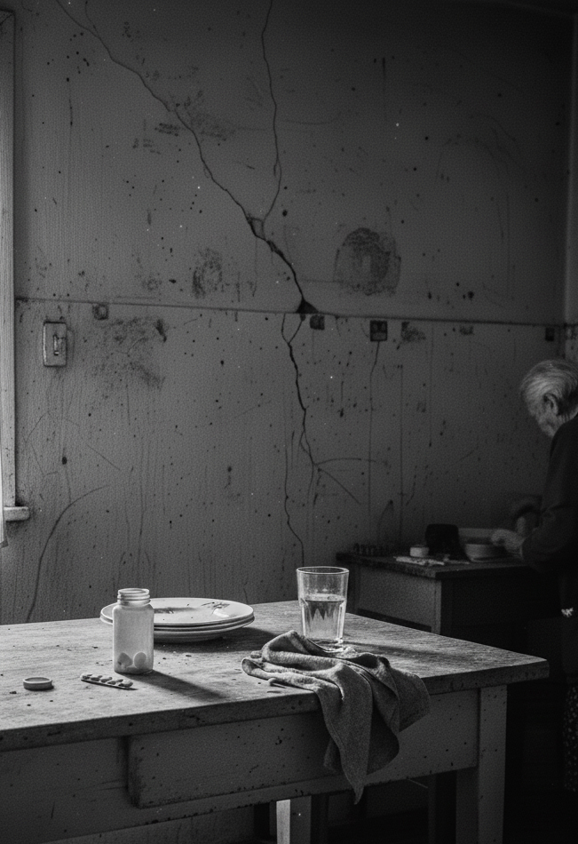
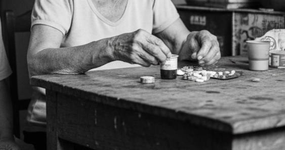
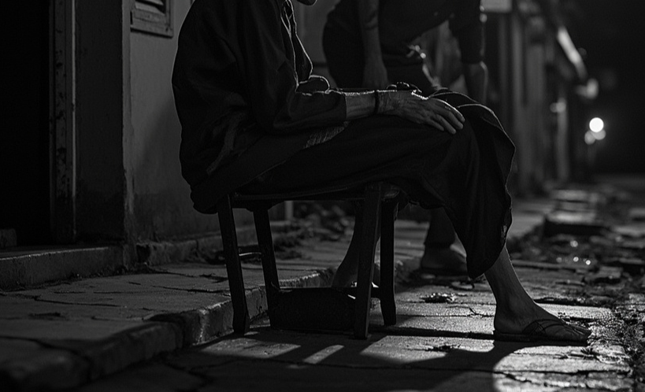
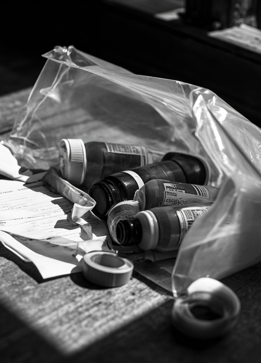
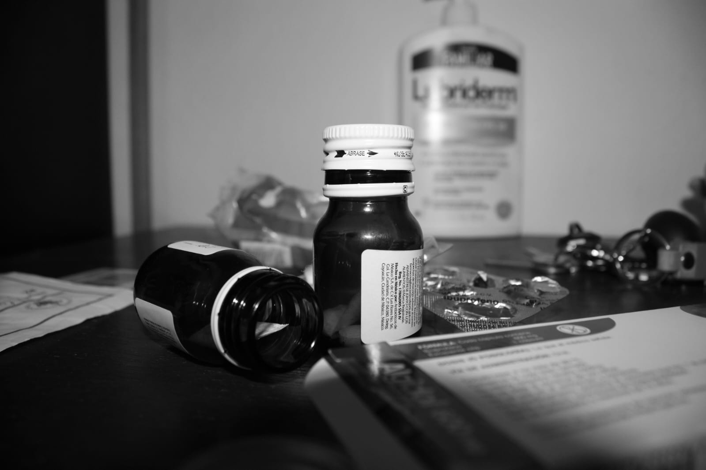

Esta exposición digital presenta cuatro ejes narrativos Rutina, El paso del tiempo, Dependiente y Señales de carga construidos a partir de una serie fotográfica documental. Cada imagen puede ampliarse, escucharse y comentarse para propiciar una experiencia reflexiva y empática.
Consejo: usa audífonos para percibir los audios ambientales. Las imágenes son sensibles; recomendamos un recorrido pausado.
Rutina
La rutina se convierte en un territorio silencioso donde el acompañante transita día tras día. No es sólo repetir acciones: es sostener horarios médicos, medicamentos, crisis, silencios y esperas. Con el tiempo, los gestos automáticos sustituyen la voluntad; el tiempo propio se diluye y el cuidado se convierte en el centro absoluto de la vida cotidiana.


El paso del tiempo
El tiempo no avanza igual para quien acompaña: se estira, se fragmenta, se detiene. Los días se convierten en semanas y las semanas en años donde el cuidado deja huellas invisibles en el cuerpo y en la memoria. El paso del tiempo evidencia el desgaste, pero también la resistencia y la permanencia del vínculo.

Dependiente
La dependencia no sólo habita en el cuerpo o en la mente del enfermo: se instala también en la relación con quien acompaña. El cuidador se convierte en sostén, intérprete, mediador y presencia constante. En esa dependencia, el espacio personal se disuelve; no hay distancia posible entre la necesidad del otro y la propia vida


Carga
La carga no siempre se declara en palabras: se filtra en detalles mínimos, casi imperceptibles. Son las ojeras que no logran esconder las noches en vela, la postura encorvada, la respiración contenida antes de un nuevo episodio. La casa se llena de objetos que evidencian el desgaste.